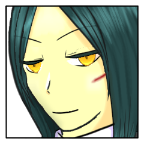
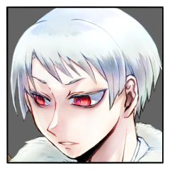
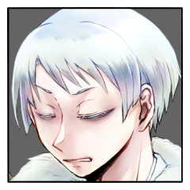
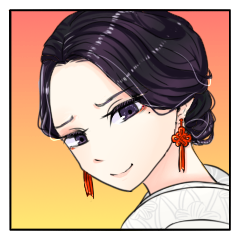
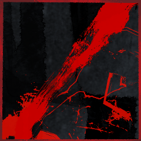
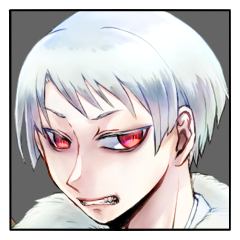
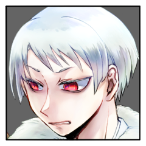
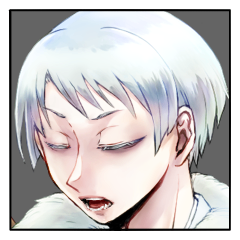

GM
ではシノビガミセッション『神楽八十神追』第十回！
三榊 琴梨
2D6-1>=5 （判定：罠術） (2D6-1>=5) ＞ 6[1,5]-1 ＞ 5 ＞ 成功
爾甁粢 野葛
2D6>=5 （判定：調査術） (2D6>=5) ＞ 10[4,6] ＞ 10 ＞ 成功
三榊 琴梨
演出は後ほどまとめて。
百々坂さんに接近戦攻撃。
三榊 琴梨
2D6>=5 （判定：骨法術） (2D6>=5) ＞ 5[2,3] ＞ 5 ＞ 成功
百々坂 瞠
2D6>=5 （判定：骨法術） (2D6>=5) ＞ 8[4,4] ＞ 8 ＞ 成功
GM
こちらも回避成功ですね。琴梨さんからRPをどうぞ。
三榊 琴梨
黒い風のように女は戦地を駆け、黒煙と共に消えた。
その身のこなしはもはや記憶にあるものと遠いものだ。
三榊 琴梨
けれどきっと、追っている、自分ではなくてあの赫を。
百々坂の先、名張の前に、行かせまいと立ち塞がる。
百々坂 瞠
轟音の先、黒煙の中。
その中に紛れた黒髪と黒衣を、琴梨は違わず見つけることができる。
百々坂 瞠
己の行く先へ飛び込み、行く手を遮る姿に目を細める。
勢いのままでなど突破させてはくれないと、その立ち姿でさえ理解できる。
百々坂 瞠
■奥義
《闘術「百漣朧」》
指定特技 ：骨法術
エフェクト：範囲攻撃/撃ち+くらまし/人数制限+射程低下
効果・演出：ただ単純な格闘術。
柔軟で機敏な肉体によって高められ、漣の如く押し寄せる連続性と忍びの目にさえ追えぬ朧の速度を得て、それは奥義の域へ至った。
GM
OK。奥義破りは骨法術からくらましと沈黙で-3。
GM
琴梨→名張の感情修正は既に使われていますね。
逆はまだ。
葦原 名張
2D6>=8 （判定：骨法術） (2D6>=8) ＞ 4[1,3] ＞ 4 ＞ 失敗
三榊 琴梨
奥義破りします。
名張さんから感情修正を頂きたく。
三榊 琴梨
2D6-3+1>=5 （判定：骨法術） (2D6-3+1>=5) ＞ 9[4,5]-3+1 ＞ 7 ＞ 成功
GM
では振り直しをどうぞ。修正値はそのままです。
三榊 琴梨
2D6-3+1>=5 （判定：骨法術） (2D6-3+1>=5) ＞ 4[2,2]-3+1 ＞ 2 ＞ 失敗
[ 三榊 琴梨 ] 忍具 : 2 → 1
三榊 琴梨
2D6-3+1>=5 （判定：骨法術） (2D6-3+1>=5) ＞ 9[4,5]-3+1 ＞ 7 ＞ 成功
百々坂 瞠
力量差での一蹴などできはしない。
そう見るや金の瞳が、素早く目前の相手を睥睨する。
その構えに、呼吸に生じる僅かな隙を探し、
百々坂 瞠
そうして、飛び込む。
突破しての向こう側、その焔までも断ち切るような目論見で。
しかし。
三榊 琴梨
ぴたり、と息の合った組み手のような動きだった。
地に足を据え、半身を捻じり、その勢いを止める手が差し出されたのは。
三榊 琴梨
「わたくしが立っている限り、『八千矛』にはもう触れさせません！」
百々坂 瞠
目の前に現れたたおやかな手指は、その実、印象とは全く真逆のものを秘めていた。
その動作一つで、それを過ぎ越してすぐさま背に伸びる追撃さえ思い描くことができる。
百々坂 瞠
真っ直ぐに行く手ばかりを見ていた視線が、ついとその持ち主へと逸れ。
瞬間、重心とともに加速度を後方へ。そのまま手をついて転回し距離を取る。
百々坂 瞠
「……ああ。
『命果てるまでも』彼を支えると。きみは誓ったのだったな、『姫君』よ」
三榊 琴梨
深追いはしない。できない、というのが正しい。
迂闊に踏み込めば、返り討ちに遭うのはこちらだ。
それほどの相手であることを知っている。
三榊 琴梨
今は、まだ。
意志の強い、射干玉の瞳は、次の機を見据えている。
三榊 琴梨
「ええ。それこそが、わたくしの御役目」

百々坂 瞠
「果たさせるわけには――と、言いたいところだがね。
私ときみの望みの交錯点が一つだけある」
百々坂 瞠
「命が果てれば終わるのだろう？
きみか、『八千矛』か、いずれかの」
三榊 琴梨
「かの『八千矛』でも、死んでしまえば御役目を果たすことは叶わないでしょう」
三榊 琴梨
ちくりとした痛み。
中身はとうに、かつて慕った彼女ではない。理解している。割り切ってもいる。
それでも、その姿をした相手に言うのはどうしても、少し辛い。
奮い立てるように。
三榊 琴梨
「それはあなた様方にも言えることです」
爾甁粢 野葛
「…『神器』め、口を動かせと命じた覚えは無いぞ。」

爾甁粢 野葛
「余計を喋る前に、戦いに集中しろ。」
三榊 琴梨
「あら、わたくしもあなた様のお言葉は聞きたくありませんわ」
三榊 琴梨
「……それに、こちらに口を挟んでいてよろしくて？」
爾甁粢 野葛
「……ふん。
口が減らないのは、お前も同じか……」
百々坂 瞠
何事か開きかけた口を、割り入る声に応じて噤んだ。
『姫君』の返答にか、それとも彼女と『須佐之男』との言い争いにか、唇の輪郭だけが弧を描く。
爾甁粢 野葛
「ならば、今のうちに耳を慣らしておけ。
この図体ばかりの男が動かなくなるのも、直ぐの事だ。」
葦原 名張
「『八十神』はよほど”おなご”とお話したいらしいなぁ」
三榊 琴梨
「もしそんなことが起こるなら、わたくしは耳を引き千切ってみせましょう」
爾甁粢 野葛
「…悪いが、長く狩りを続けても
ついぞ獣と言葉を交わす方法は知り得なかったのでな。
当然こうも成ろうと言うものだ。」
爾甁粢 野葛
「そして『姫君』も……随分と幼稚な宣言をするものだ。
先に言ってしまえば、阻止することも造作も無いというのに。」
爾甁粢 野葛
「お前たち二人…どちらも直情に過ぎる。
耐え忍ぶことを知らぬ者たちに、俺が負けることなどありはしない。」
GM
ではプロット３の処理が終了し、ラウンド２が終了。
ラウンド終末忍法などもなし。
[ GM ] ラウンド数 : 2 → 3
百々坂 瞠
2D6>=5 （判定：罠術）斎垣 (2D6>=5) ＞ 7[1,6] ＞ 7 ＞ 成功
GM
ラウンド３のプロットオープン、よろしくお願いします！
[ 爾甁粢 野葛 ] がダイスシンボルを公開。出目は 4 です。
[ 葦原 名張 ] がダイスシンボルを公開。出目は 2 です。
[ 百々坂 瞠 ] がダイスシンボルを公開。出目は 4 です。
[ 三榊 琴梨 ] がダイスシンボルを公開。出目は 2 です。
GM
◆ラウンド３
プロット４：野葛、瞠 ２：名張、琴梨
爾甁粢 野葛
1D1000 (1D1000) ＞ 539
爾甁粢 野葛
1D100 (1D100) ＞ 97
葦原 名張
2D6>=8 （判定：骨法術） (2D6>=8) ＞ 4[1,3] ＞ 4 ＞ 失敗
三榊 琴梨
奥義破りします。
名張さんから感情修正を頂きたく。
三榊 琴梨
2D6-3>=5 （判定：骨法術） (2D6-3>=5) ＞ 4[1,3]-3 ＞ 1 ＞ 失敗
GM
はい。奥義破りは呪術からくらましで-2ですね。
爾甁粢 野葛
奥義を破ります。
そして判定に回想シーンを使います。
GM
はい、では秘密を開示して回想シーンをどうぞ。
百々坂 瞠
割り込みますが先に、奥義破りへの感情修正+1を宣言させてください。
GM
はい、感情修正了解です。
改めて回想シーンの演出をお願いします。
爾甁粢 野葛
【秘密：爾甁粢 野葛】
数千年にも及ぶ屈辱の末、ついに綻びが起きる。儀式に使用され消滅するはずだった祭具『羽喫鳴鏑』を先代の八十神によってどうにか残され、今はあなたの手元にある。今回の異常はそれによって引き起こされたものだろう。このまたとない機会を無駄にするわけにはいかない。
あなたはプライズ・祭具『羽喫鳴鏑』を持つ。
爾甁粢 野葛
我々は、とうの昔に自分達が阿呆だと知っていた。
爾甁粢 野葛
力を盲信した結果が、天の川の如く途方もない敗北の歴史を作った。
爾甁粢 野葛
優良なる血の結晶は50年ごとに間引きされ、薄められた血が細々と残されるのみ。
爾甁粢 野葛
如何なる勝ち方をするか、が問題なのだ。
爾甁粢 野葛
ただ儀式で勝ち名乗りを上げ、力を誇れば良いというものではない。
幾千年にも渡り闇の奥底に隠されて来た我らの声など、世に響くはずも無い。
爾甁粢 野葛
勝者たることを示すには"権威"を必要とする。
爾甁粢 野葛
八千矛を打ち倒した上で、
我らこそが新たな世の支配者に相応しき存在であると示さなければならない。
爾甁粢 野葛
儀式の作法に則り、儀式を乗っ取ることで、勝者たる我々こそが新たなる国主神であると知らしめす。
まつろわぬ国の始まりには、須勢理毘売たる役目の者を正妻として迎えることが不可欠だ。
爾甁粢 野葛
そのために、箱庭の『姫君』を……
堅洲の里の民と同じように――ただ儀式の成就のために生かされて来た娘を、贄とすることとなっても――
我らが負い続けた苦悶を、この哀れな白い花に与え続けることになったとしても……
爾甁粢 野葛
「…才という才を殺し尽くされて来た我らだ。
この手で作り出す世は……間違いなく、容易ならざる物となるだろう。」

爾甁粢 野葛
「恨み、呪い、怒りを見せてみるが良い。」
爾甁粢 野葛
「あらゆる辛苦に耐え抜いた我らの里だ。
いかなる阻害があろうと、膝を屈することは無い。」
爾甁粢 野葛
「必ずや、儀式の要となる八千矛を排除し…大国主たる地位を奪い取る。
我らが世に飛び立つために、必要なことはそれだけだ。」
爾甁粢 野葛
「比良坂より齎され、里を縛り続けて来た宿怨の縄を――
今こそ『神器』を以って打ち破り、引き裂く時だ！」
GM
では都合-2+3+1-1をつけ、呪術での判定をどうぞ。
爾甁粢 野葛
2D6-2+3+1>=6 （判定：憑依術） (2D6-2+3+1>=6) ＞ 12[6,6]-2+3+1 ＞ 14 ＞ スペシャル(【生命力】1点か変調一つを回復)
GM
琴梨の奥義は破られ、無効となります。
名張と琴梨に3点の任意分野喪失が入ります。
GM
生命力喪失はプロット４の同時攻撃処理後のタイミングになるので、先にRPをしましょう。
百々坂 瞠
吼え猛る主の声に応ずるは、まさに名を呼ばわれた『神器』。
この場にあるはずもなき、儀典と伝承の例外者。
百々坂 瞠
あるいはもはや、それを奪われた空の器。
その空虚になみなみと怨嗟と怒りとを注がれて、人ならぬ色の目をぎらつかせて笑うその姿は、狩人の忠実なる猟犬。
百々坂 瞠
その姿が、いま一度月光の下で疾駆する。
言葉でもって確かに露わにした殺意を、体現するものとなる。
葦原 名張
月夜に響く獣声とともにもはや人ではなくなった殺意がこちらへと向かってくる。
葦原 名張
合図も声も、身動きさえも許さない疾走。
三榊 琴梨
否、黒煙に塗れた白無垢はもはや煤け、汚れ切っている。
顔を覆う薄布が、はらりと落ちた。
三榊 琴梨
赤と黒の間に割って入る。
ただそれだけしかできなかった。
自分を、護ることすらも。
三榊 琴梨
でも、動いてしまった。
心が、身体が、あなたを護りたい、と。
『姫君』ではなく、『三榊 琴梨』が、

三榊 琴梨
「……ご無事、ですか。名張、様」
三榊 琴梨
胸から赤々と血を流して。
それでも、『葦原 名張』を見つめる眦は下げられ、口元は弧を描いている。
葦原 名張
眼前に迫る殺意に横から飛び込む白は一人しかいない。
葦原 名張
名張の目は美しい姫君を捉える。そしてその向こうから迫るものにも。
爾甁粢 野葛
「……その動き。
先ほど『神器』の乱打を防いだ術か。
二度目はやらせん。」
爾甁粢 野葛
弦を弾き、動きを遮らんと弓を放った。
かくして赤き鬼は倒されて、青白き月光が照らすのは白衣の姫君のみ――
爾甁粢 野葛
「――待て、『神器』！ 動きを止めろ！」
爾甁粢 野葛
見立てでは、僅かに息を止めるに至らぬはずであった。
『姫君』がなおも食い下がり…生き延びようと足掻くのならば。
堅洲の里の如く――その爪痕を遺さんと、生をにしがみ付くのであれば…未だ死なぬ筈の傷が。
爾甁粢 野葛
――今まさに、その命に届かんとしていた。
百々坂 瞠
割り入る白は先も目にした光景。
違いは、まるでその体勢の整っていないこと。
此度は力のみで押し切るに、何の支障もない。
百々坂 瞠
だが人ひとりとの激突の衝撃に、何の影響も受けぬはずもない。
速度を減じたその瞬間に目に映るのは、炎と煙の中に翻る純白のベール。
百々坂 瞠
その奥のかんばせを目にしたことなど、この女とてありはしなかった。
比良坂機関の者として知らぬはずもないその矜持を損ねる理由は、これまでひとつも。
百々坂 瞠
だが、だからこそ知っている。
隠された面差しを目の当たりにしたものの末路を。
百々坂 瞠
「――ハ、ハ、ハ。
ハハハハハハ！！！」
百々坂 瞠
その貌を目にしたものを殺す？
できるものか。
百々坂 瞠
殺すのは。
殺さねばならないのは此方だ。
百々坂 瞠
この『姫君』を殺さねば、『八千矛』になど届かない。
この子がそうすると誓ったならばそれを決して違えぬことを、
誰よりも知っている。
百々坂 瞠
それを悟れば片脚をその場へ。
そこを支点に、これまで載せてきた加速のすべてを回転運動へ変える。
上がったもう片方の脚にて、蹴撃。硬い靴底が、
百々坂 瞠
露わになった、その顔面へと違わずに吸い込まれる。
百々坂 瞠
叫びが耳に入るはその刹那。
体重を大きく預けたその体勢のままで、望まれた通りに静止して。
百々坂 瞠
顔だけが不服そうに、主たる白へ向けられる。
三榊 琴梨
その渾身の、彼女の研鑽した体術を煮詰めたような蹴撃を、今の琴梨に受け止めることなどできはしなかった。
三榊 琴梨
鈍い音。
為されるがまま、小さな身体が地に倒れ伏す。
三榊 琴梨
真白い服も、雪のような肌も、血と汚泥と煤に塗れている。
三榊 琴梨
微かな声だけが、譫言のようにあなたを呼んでいる。
葦原 名張
百々坂 瞠の技は夥しい殺意を伴った奔流となり、それは琴梨のみに向けられたものではない。
葦原 名張
身を挺して俺を庇う琴梨に放たれた致命の攻撃はまた、俺自身にも及んでいる。

葦原 名張
琴梨が倒れ伏すのと己の鮮血が吹き上がるのはほぼ同時。
葦原 名張
視界が傾く。
首をかしげているのではなく体を支えるだけの力が残っていない。
葦原 名張
膝をつく。
月が出た夜のはずが、夜明けが近いはずが、周囲の明度が落ちていく。
大きな鐘を耳元で鳴らされているかのように音が廻る。
葦原 名張
それでも、俺の名を呼ぶ琴梨の声だけは聞こえる。
葦原 名張
その声を頼りに、汚れ切った白無垢の、約束と覚悟を共にした花嫁を赤濡れた手ですくい、抱き上げる。

爾甁粢 野葛
「馬鹿な……
誰が命まで奪えと言った！！
加減も知らないのか！！」
爾甁粢 野葛
瞬く間に鮮血に染まる、黒と白の衣を眺めながらも…
今や、どうすることも出来ず。
目を見開いて、驚きに立ち尽くすばかり。
百々坂 瞠
伏して動かぬ『姫君』を『八千矛』が求めるとみれば、その脚を除けて身を明け渡す。
どのみち助かりはしまい。
命を幾度も永らえる術持つものなど、伝承の祖より幾千年を経たこの場に力を貸しはしない。
百々坂 瞠
そのまま驚愕を隠しもせぬ主へ、なんでもないように口を開く。
爾甁粢 野葛
「――だからと言って、死なれてはどうにもならんだろうが！
もはや勝負は付いた！
せめて奴らの命だけは繋ぎ止めろ！」
爾甁粢 野葛
呆けた言葉を吐く『神器』に命じると共に、駆け寄ろうと。
GM
プロット４の処理を行います。
琴梨、野葛は３点の任意分野を喪失、生命力０点に至ります。
GM
それぞれ脱落、死亡と選べますが、いかがいたしますか。
GM
了解しました。
死亡攻撃、もしくは遺言と選べます。いかがいたしますか？
百々坂 瞠
下された命に、目前の忍び達を見下ろす。
紅白の肌に、一様に血と泥と煤とを纏わりつかせた死に体の姿を。
葦原 名張
俺と琴梨から流れる血が交じり合い血河となって地を這う。
葦原 名張
流れ出る命はとどまることなく堅州の里へと染み込んでゆく。
葦原 名張
暗い視界のその向こうで『八十神』と『神器』が何か言葉を交わしている。
死の淵にある俺の耳に届くのは、どちらのものともわからなくなった琴梨の鼓動と絞り出される声のみ。
葦原 名張
「……ちょっと、行先が変わりそうだな」
三榊 琴梨
寒かった。
張り詰めた空気も、怨みが積もったこの地も、流れる血も、すべて冷たかった。
三榊 琴梨
温かかった。
あなたが抱き留めてくれたから。
大きな熱い手も、聞こえる鼓動も、血潮さえも、琴梨を安心させた。
すべてあなたのものだから。
三榊 琴梨
赤と黒に塗れた、小さな手が添えられる。
葦原 名張
添えられた小さな手を武骨な手が握り返す。
葦原 名張
俺とならどこへでもと。
腕の中の小さな温もりは、その温もりを失いつつある琴梨は、そう言ってくれる。
葦原 名張
ほんのわずか。
ほんのわずか頭によぎる。
葦原 名張
『役目を果たす』という、代々続く呪い。
葦原 名張
完璧には果たせずともこの二人の命が尽きるまでの最後のほんの一瞬までを使えば、少なくとも『八十神』を―――。
三榊 琴梨
神器を授かって生まれた故に生家から引きはがされ、醜女衆に預けられて存在を隠匿され、琴梨はずっと『姫君』という名の籠の中の鳥として生きてきた。
あったのは役目だけ。
三榊 琴梨
その、誇りであり心の拠り所だった役目ももう果たせない。
唯一の、気を許せる姉すらもういない。
三榊 琴梨
琴梨は微笑んでいる。
最後の最後、ふたりでと言ってくれた、あなたのために。
あなただけに見てもらうために。
綺麗に、笑っている。
葦原 名張
俺の耳には最初で最期のの『おねがい』が流れこむ。
葦原 名張
『お前など、名ばかりが有名な張子の虎だ』
葦原 名張
親父の言葉をぼんやりと思い出す。
思えば親父は、儀式の役目もなくただ後継ぎをつくり、育て、何一つ自由も得られない立場。
そんな親父が『八千矛』の担い手となった俺に当たることは珍しくなかった。
葦原 名張
時に『八千矛』たる振る舞いのためにと口を出し。
時に外のことも知っておけと高校を卒業させ。
その実、親父は壊れていた。
葦原 名張
儀式に殉じることも、すべてに歯向かって投げ出すこともできず。
葦原 名張
そして俺は、その役目に没頭することが親人のためになると思っていた。
葦原 名張
だから俺にとっては『八千矛』がすべてであり、役目を果たし儀式を成功させることが当たり前であり。
そしてことが終われば、次の担い手に向けて子をつくる。
葦原 名張
そしてその実、儀式の仕組みは俺が知っているよりもはるかに醜悪で合理的で完全にシステムとなっていて。
葦原 名張
言いつけをまもりしきたりに囚われ何一つ自由なく籠に囚われてきたはずの琴梨は。
しかし、自分の夢を語ることを恐れなかった。
葦原 名張
だから、そんな琴梨のために。
世界を救おうと思った。
葦原 名張
そう言って精いっぱい、葦原 名張としての笑顔を見せる。
これは俺と琴梨の約束だ。
三榊 琴梨
スターバックスも、映画館も、服屋も、夏の海も、冬の山もない。
きっと、ここよりもずっと暗い昏い場所だけれど。
三榊 琴梨
名張様は、一緒にいてくれる。
役目を果たせない『姫君』なのに。
それでも一緒にいてくれる。
三榊 琴梨
――精一杯、笑ってみせて。
そして、事切れる。
あなたの胸の中で、ひどく、安心したように。
葦原 名張
ふたりの旅路を邪魔するものはなにもない。
葦原 名張
決して離すまいとその体をつよくつよく。
つよく。
GM
名張、琴梨は死亡。
プロット４の処理が済み、そのままラウンド３が終了します。
百々坂 瞠
金色の視線は、変わることなく彼らへと注がれていた。
微かに動いていたその手から、腕から力が抜けて、
地の吸い切れないほどの血河がその流れを止めてなお。
百々坂 瞠
酷く冷える、と思った。
身体だけではない。
見えざる刃と化し、迸り、死をもたらすほどに昂っていた気もすっかりと、波一つなく凪いでいる。
凍りついたように。
百々坂 瞠
あの制止のためか。
それに従えなかったためか。
それとも成しようのない命のためか？
すっかり茫洋とした視線が彷徨って、やがてひとつの解を見つける。
百々坂 瞠
面を上げる。
駆け寄る白い影へ視線を向けて、やおら口を開く。
百々坂 瞠
「安らかに死にゆく者の姿というのは、
心をこんなにも冷やすのだな」
百々坂 瞠
死にゆくものを初めて見たわけなどない。
忍びとして幾度も見た屍と彼らとを隔てた理由、
その心が動きを止めた真の理由など、
『百々坂瞠』ではない女には、永遠にわかりはしない。

爾甁粢 野葛
「馬鹿な………
本当に、死んだと言うのか……？
こんなにも容易く……」
爾甁粢 野葛
白装束の男が辿り着いた時には、既に生命の灯は掻き消えたあと。
物言わぬ姿となれど、離れることの無い黒と白があるのみで。
爾甁粢 野葛
「惰弱な『八千矛」め……
その巨躯に似合わぬ、まるで羽虫の如き儚さだ。」
爾甁粢 野葛
「俄か仕込みの術に対し、お前の肉体は明らかに適応し切れていなかった。
力を代償にして己が身を蝕むばかりの術に、何の意味があったというのか。」
爾甁粢 野葛
「…お前さえ気を張り、生にしがみ続けたならば……
『姫君』もまた、己を奮起して生に縋り付くことが出来たであろうに……」
爾甁粢 野葛
「お前と言う者を…
いや、『八十神』という役目を見誤ったようだ……
お前たちの中に在ったものは…我らを屠るための殺意と狡猾さではなく――」
爾甁粢 野葛
軽く、息を吸い込む。
朝の近い、凛と冷えた空気が肺の中を満たして行き……
そうして、口元から白い靄が漏れ出でた。
爾甁粢 野葛
八千矛が抱く胸の中。
全てから護るように抱き留める『姫君』を……
その顔を覗き込もうと、膝を折って視線を下ろす。
三榊 琴梨
その穏やかな少女の顔は、
決して『八十神』に向けられたものではない。
三榊 琴梨
『三榊 琴梨』を求めてくれた、ただ一人のためだけに向けられたものだ。
爾甁粢 野葛
「…先の戦いの中で、刺繍飾りが落ちたのか……」
爾甁粢 野葛
「その顔がよく見える方が……似合うな。」

爾甁粢 野葛
「……言ったはずだ。
遅かれ早かれ、だと。」
爾甁粢 野葛
「…だからもう、あまり身体を冷やすな。」
爾甁粢 野葛
「…『神器』よ。
上着を脱いで、『姫君』に掛けてやれ。」
百々坂 瞠
その答えが自らへの返答でないことなど、『神器』は気にも留めない。
道具とはそういうものだ。
ましてや、この儀と伝承とに並々ならぬ情を傾けるこの主のこと。
百々坂 瞠
『神楽八十神追』を形作るもののうちに。
この場にあるはずもないものなど、最初から顧みられる道理もない。
いつかと同じことだ。
それはどこまでも、正しいことだ。
百々坂 瞠
スーツの上着がブラウスの上を滑り下りる。
煤に塗れた黒衣は、『姫君』の白絹のいくばくかを覆い隠す。
百々坂 瞠
その背に空いた孔だけが、小さく白地を覗かせている。
百々坂 瞠
あなたがこの女の命を繋いだ、紛れもない証が。
爾甁粢 野葛
「……お前は成すこと全てが雑だな。」
爾甁粢 野葛
物言わぬ『姫君』に掛けられた上着を摘まみ、形を整えて引き上げる。
その白く透き通って行く肌を、覆い隠すように。
爾甁粢 野葛
そうして、こちらを一瞥もせぬ顔を黒衣の下へ。
爾甁粢 野葛
幾許かの迷いを経た後、
隣り合う男もまた、その顔を同じ衣の中に埋めた。
GM
戦果の宣言をどうぞ。
生殺与奪の宣言もあれば合わせてお願いします。
GM
と、このタイミングですが本日はここまでとしましょう。
次回最終回に向け、じっくりと戦果や物語の〆など、考えていただけると幸いです。
GM
次回の予定は……えーと……あとで確認します！